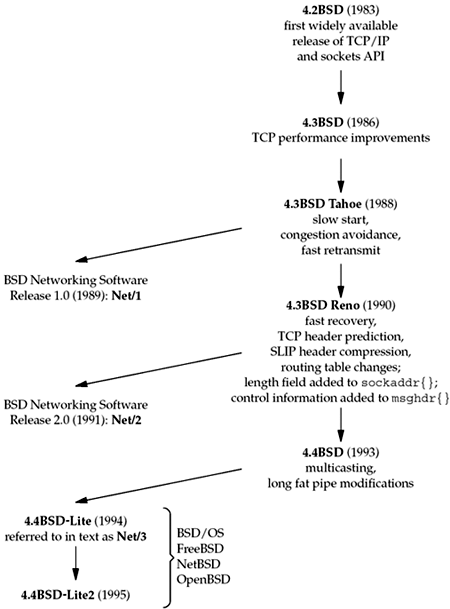

| [ Team LiB ] |
|
1.8 BSD Networking HistoryThe sockets API originated with the 4.2BSD system, released in 1983. Figure 1.15 shows the development of the various BSD releases, noting the major TCP/IP developments. A few changes to the sockets API also took place in 1990 with the 4.3BSD Reno release, when the OSI protocols went into the BSD kernel. Figure 1.15. History of various BSD releases. The path down the figure from 4.2BSD through 4.4BSD shows the releases from the Computer Systems Research Group (CSRG) at Berkeley, which required the recipient to already have a source code license for Unix. But all the networking code, both the kernel support (such as the TCP/IP and Unix domain protocol stacks and the socket interface), along with the applications (such as the Telnet and FTP clients and servers), were developed independently from the AT&T-derived Unix code. Therefore, starting in 1989, Berkeley provided the first of the BSD networking releases, which contained all the networking code and various other pieces of the BSD system that were not constrained by the Unix source code license requirement. These releases were "publicly available" and eventually became available by anonymous FTP to anyone. The final releases from Berkeley were 4.4BSD-Lite in 1994 and 4.4BSD-Lite2 in 1995. We note that these two releases were then used as the base for other systems: BSD/OS, FreeBSD, NetBSD, and OpenBSD, most of which are still being actively developed and enhanced. More information on the various BSD releases, and on the history of the various Unix systems in general, can be found in Chapter 01 of [McKusick et al. 1996]. Many Unix systems started with some version of the BSD networking code, including the sockets API, and we refer to these implementations as Berkeley-derived implementations. Many commercial versions of Unix are based on System V Release 4 (SVR4). Some of these versions have Berkeley-derived networking code (e.g., UnixWare 2.x), while the networking code in other SVR4 systems has been independently derived (e.g., Solaris 2.x). We also note that Linux, a popular, freely available implementation of Unix, does not fit into the Berkeley-derived classification: Its networking code and sockets API were developed from scratch. |
| [ Team LiB ] |
|